ให้สร้าง array2 จาก array1 ตามที่โจทย์กำหนด โดยใช้ฟังก์ชัน Array.map()
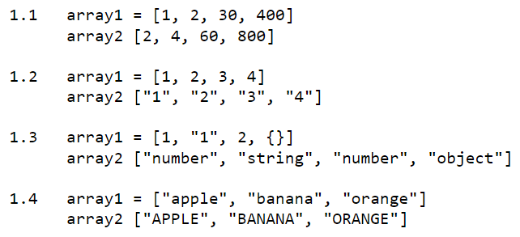
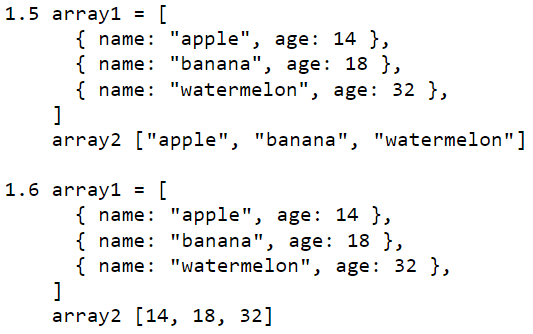
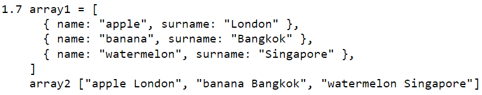
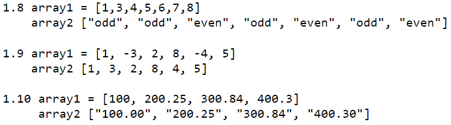
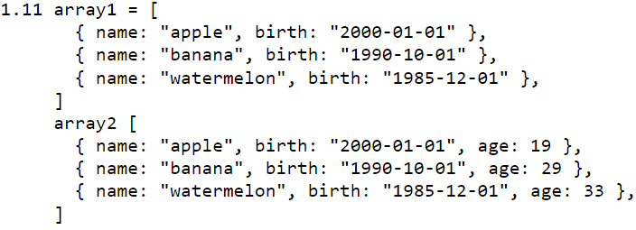
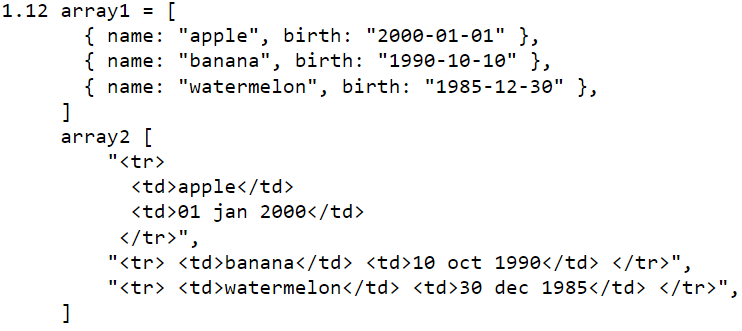
//1.1
let array1 = [1, 2, 30, 400];
let array2 = array1.map((item) => item * 2);
//1.2
let array1 = [1, 2, 3, 4];
let array2 = array1.map((item) => item.toString());
//1.3
let array1 = [1, "1", 2, {}];
let array2 = array1.map((item) => typeof item);
//1.4
let array1 = ["apple", "banana", "orange"];
let array2 = array1.map((item) => item.toUpperCase());
//1.5
let array1 = [
{ name: "apple", age: 14 },
{ name: "banana", age: 18 },
{ name: "watermelon", age: 32 },
];
let array2 = array1.map((item) => item.name);
//1.6
let array1 = [
{ name: "apple", age: 14 },
{ name: "banana", age: 18 },
{ name: "watermelon", age: 32 },
];
let array2 = array1.map((item) => item.age);
//1.7
let array1 = [
{ name: "apple", surname: "London" },
{ name: "banana", surname: "Bangkok" },
{ name: "watermelon", surname: "Singapore" },
]
let array2 = array1.map((item) => `${item.name} ${item.surname}`);
//1.8
let array1 = [1,3,4,5,6,7,8];
let array2 = array1.map((item) => item % 2 == 0 ? `even` : `odd`);
//1.9
let array1 = [1, -3, 2, 8, -4, 5];
let array2 = array1.map((item) => Math.abs(item));
//1.10
let array1 = [100, 200.25, 300.84, 400.3];
let array2 = array1.map((item) => item.toFixed(2);
//1.11
let array1 = [
{ name: "apple", birth: "2000-01-01" },
{ name: "banana", birth: "1990-10-01" },
{ name: "watermelon", birth: "1985-12-01" },
];
let array2 = array1.map((item) => Object.assign(item, {age: getYear(item.birth)}));
function getYear (birthDateString) {
let birthDate = new Date(birthDateString);
return Math.floor((Date.now() - birthDate.getTime()) / 31536000000); //= 365 * 24 * 60 * 60 * 1000
}
//1.12
let array1 = [
{ name: "apple", birth: "2000-01-01" },
{ name: "banana", birth: "1990-10-10" },
{ name: "watermelon", birth: "1985-12-30" },
];
let array2 = array1.map((item) => `<tr> <td>${item.name}</td> <td>${getDateFormat(item.birth)}</td> </tr>`);
function getDateFormat(birthDateString) {
let birthDate = new Date(birthDateString);
return birthDate.toLocaleDateString('en-GB', { day: '2-digit', month: 'short', year: 'numeric' }).toLowerCase();
}
ให้สร้าง array2 จาก array1 ตามที่โจทย์กำหนด โดยใช้ฟังก์ชัน Array.filter()
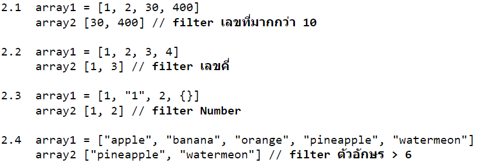
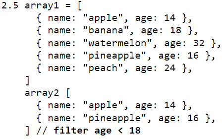
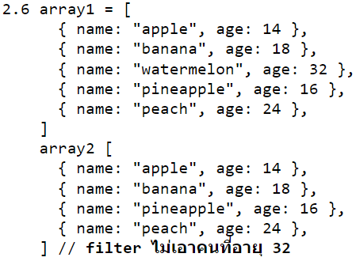
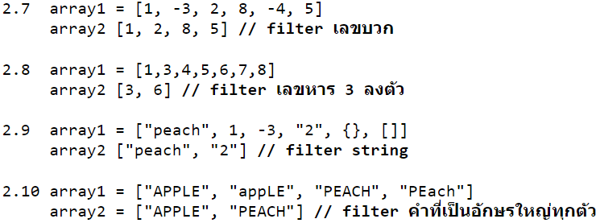
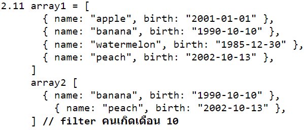
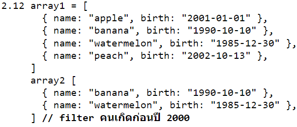
//2.1
let array1 = [1, 2, 30, 400];
let array2 = array1.filter((item) => item > 10); // filter เลขที่มากกว่า 10
//2.2
let array1 = [1, 2, 3, 4];
let array2 = array1.filter((item) => item % 2 == 1); // filter เลขคี่
//2.3
let array1 = [1, "1", 2, {}];
let array2 = array1.filter((item) => typeof item === `number`); // filter Number
//2.4
let array1 = ["apple", "banana", "orange", "pineapple", "watermeon"];
let array2 = array1.filter((item) => item.length > 6); // filter ตัวอักษร > 6
//2.5
let array1 = [
{ name: "apple", age: 14 },
{ name: "banana", age: 18 },
{ name: "watermelon", age: 32 },
{ name: "pineapple", age: 16 },
{ name: "peach", age: 24 },
];
let array2 = array1.filter((item) => item.age < 18); // filter age < 18
//2.6
let array1 = [
{ name: "apple", age: 14 },
{ name: "banana", age: 18 },
{ name: "watermelon", age: 32 },
{ name: "pineapple", age: 16 },
{ name: "peach", age: 24 },
];
let array2 = array1.filter((item) => item.age != 32); // filter ไม่เอาคนที่อายุ 32
//2.7
let array1 = [1, -3, 2, 8, -4, 5];
let array2 = array1.filter((item) => item >= 0); // filter เลขบวก
//2.8
let array1 = [1,3,4,5,6,7,8];
let array2 = array1.filter((item) => item %3 == 0); // filter เลขหาร 3 ลงตัว
//2.9
let array1 = ["peach", 1, -3, "2", {}, []];
let array2 = array1.filter((item) => typeof item === `string`); // filter string
//2.10
let array1 = ["APPLE", "appLE", "PEACH", "PEach"];
let array2 = array1.filter((item) => item === item.toUpperCase()); // filter คำที่เป็นอักษรใหญ่ทุกตัว
//2.11
let array1 = [
{ name: "apple", birth: "2001-01-01" },
{ name: "banana", birth: "1990-10-10" },
{ name: "watermelon", birth: "1985-12-30" },
{ name: "peach", birth: "2002-10-13" },
];
let array2 = array1.filter((item) => item.birth.split(`-`)[1] === `10`); // filter คนเกิดเดือน 10
//2.12
let array1 = [
{ name: "apple", birth: "2001-01-01" },
{ name: "banana", birth: "1990-10-10" },
{ name: "watermelon", birth: "1985-12-30" },
{ name: "peach", birth: "2002-10-13" },
];
let array2 = array1.filter((item) => item.birth.split(`-`)[0] < 2000); // filter คนเกิดก่อนปี 2000